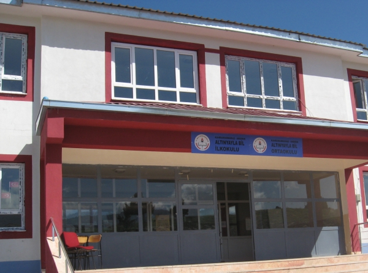
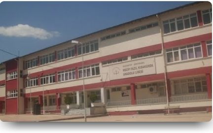
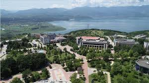

| OKUL ADI | BAŞLANGIÇ TARİHİ | MEZUNİYET TARİHİ | DETAY | FOTOĞRAF |
|---|---|---|---|---|
| ALTINYAYLA BİL İLKOKULU | 2007 | 2011 |  | |
| ALTINYAYLA BİL ORTAOKULU | 2011 | 2014 | ||
| NECİP FAZIL KISAKÜREK ANADOLU LİSESİ | 2014 | 2018 |  | |
| SAKARYA ÜNİVERSİTESİ | 2018 | 2023 |  |
2000 yılında Kahramanmaraş'ın Andırın İlçesinin Altınyayla Köyü'nde dünyaya geldim. İlk ve orta öğrenimimi Altınyayla Bil okulunda tamamladım. Teog'a ilk giren öğrenciler arasında Gaziantepte bulunan Necip Fazıl Kısakürek Anadolu Lisesi'ni kazandım ve liseyi burada bitirdim. Yks'ye de ilk giren öğrenciler arasında yer alarak Sakarya Üniversitesi Bilgisayar Mühendsiliğini kazandım. İlkokul ve ortaokulda pek çalışkan bir öğrenci olduğum söylenemez. Lisede ise en fazla dersi üçüncü sınıfta çalıştığımı düşünüyorum. Fakat mantıklı bir çalışma gösteremedim. Matematik ve fiziği daha çok sevdiğim için daha çok bu iki derse çalışıp diğerlerini boşladım. Buna rağmen güzel bir okulda güzel bir bölümde eğitim görmekteyim. Bilgisayar Mühendisliğinden baarılı bir şekilde mezun olacağımı umuyorum.